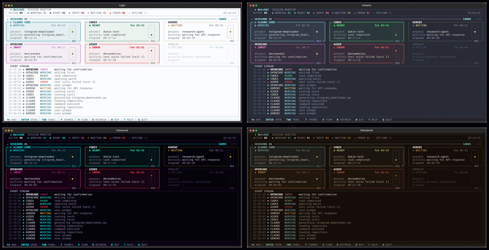

Uma tela, vários terminais
Resumo global e um card por terminal com agentes detectados. Alterne entre cards ou lista.
Saiba, sem alternar janelas, qual assistente de IA está trabalhando, qual terminou e qual pode precisar da sua atenção.
O WatchAI detecta sessões locais usando processos e, quando disponíveis, os diários do Claude Code e do Codex. Tudo em um dashboard de terminal com cartões, semáforos e linha do tempo.
Uma interface para ler o estado das sessões de longe — no espaço onde o trabalho já acontece: o terminal.

Como funciona: a versão atual do código-fonte detecta processos locais; lê também diários de Claude Code e Codex para refinar o estado. Para outros agentes, a leitura se baseia em processos. Algumas situações, como o estado INPUT, são inferidas e podem não ser exatas. Use watchai --mock para testar com dados simulados.
Os sinais de cada terminal ficam organizados para você encontrar o que precisa de atenção.
Resumo global e um card por terminal com agentes detectados. Alterne entre cards ou lista.
Estados como WORKING, READY, INPUT, WAITING e ERROR têm cor e símbolo próprios para uma leitura rápida.
O event stream reúne eventos recentes; os detalhes de cada sessão ficam a uma tecla de distância.
Bip opcional ao entrar em READY, quatro temas e layout que se adapta à largura do terminal.
Light, Vampire, Cyberpunk e Steampunk. Mude o tema com a tecla T dentro do aplicativo.

Sem conta, backend ou chave de API. Você precisa de Python 3.10 ou superior e um terminal com suporte a Unicode.
Com o ZIP, extraia a pasta e comece no passo 02. Os comandos ao lado são para bash/zsh; no PowerShell, use python e ative o ambiente com .venv\Scripts\Activate.ps1. O ZIP não é um executável pronto; instalar dependências pode exigir internet. A release 1.0.0 é anterior à detecção real.
01 CLONE O REPOSITÓRIO
git clone https://github.com/LeandroDukievicz/WatchAI.git
cd WatchAI02 CRIE UM AMBIENTE E INSTALE
python3 -m venv .venv
source .venv/bin/activate
pip install -e .03 ABRA O WATCHAI
watchaiO WatchAI já acompanha sessões locais e oferece um modo simulado para explorar a interface. A detecção ainda tem limites conhecidos, documentados no repositório.
Conhecer os limites